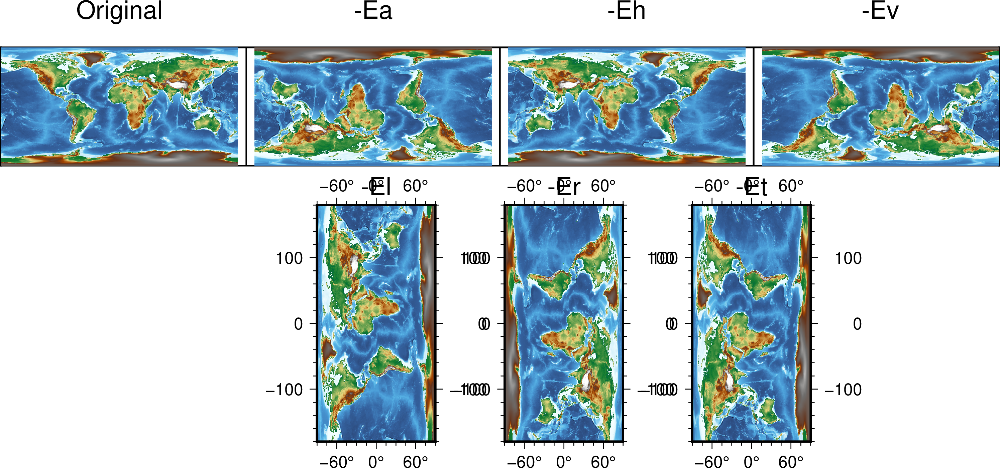

grdedit¶
| 官方文件: | grdedit |
|---|---|
| 簡介: | 修改網格檔的頭段或內容 |
grdedit 模塊具有如下功能：
- 從2D網格檔中讀入頭段信息，並使用命令行中的值替換頭段信息
- 對全球地理網格檔沿着東西方向旋轉
- 可以用 x y z 值替換網格檔中特定節點的值
語法¶
gmt grdedit grid [ -A ] [ -C ] [ -D[+xxname][+yyname][+zzname][+sscale][+ooffset][+ninvalid][+ttitle][+rremark] ] [ -E[a|h|l|r|t|v] ] [ -Goutgrid ] [ -Jparameters ] [ -L[+n|p] ] [ -Ntable ] [ -Rregion ] [ -S ] [ -T ] [ -V[level] ] [ -bibinary ] [ -dinodata ] [ -eregexp ] [ -fflags ] [ -hheaders ] [ -iflags ] [ -:[i|o] ] [ --PAR=value ]
必須選項¶
- grid
- 要修改的2D網格檔
可選選項¶
- -A
- 如有必要，則對網格間隔做微調使得其與數據的範圍相兼容。僅用於處理 GMT 3.1 之前版本生成的網格檔。
- -C
- 清除網格檔頭段區中生成該網格所使用的命令歷史
- -D[+xxname][+yyname][+zzname][+sscale][+ooffset][+ninvalid][+ttitle][+rremark]
给定网格文件头段中的基本信息：
- +xxname X变量名及其单位，格式为 varname [unit]，比如 “distance [km]”
- +sscale 读入网格数据后要乘以的因子，默认值为 1
- +ooffset 读入数据后并乘以因子后要加的常数，默认值为 0
- +ninvalid 指定值 invalid 用于表示该节点处无有效值，默认为NaN
- +ttitle 网格文件的标题
- +rremark 网格文件的注释信息
其它说明：
- 未指定的项其值保持不变
- 可以给一个空值以重置某一项，比如使用 +t 而不指定标题则设置标题为空
- 若字符串中包含空格则需要用引号括起来
- 若字符串中包含加号 +，需要使用 + 对其进行转义。或者可以使用单引号套双引号的方式，例如 ‘“title with + inside”’
- 若字符串中使用了shell变量，且变量值中包含加号，则需要使用
${variable/+/\\+} - 对于地理数据（比如 -fg ），xname 和 yname 会自动设置
- -E[a|h|l|r|t|v]
對網格做變換。該選項與除 -G 外的其它選項不兼容
- -Ea 旋轉180度
- -Eh 水平翻轉網格（從左到右）
- -Ev 垂直旋轉網格（從上到下）
- -El 逆時針將網格旋轉90度
- -Er 順時針將網格旋轉90度
- -Et 對網格進行轉置（想象成一個二維矩陣），默認使用該變換
下圖展示了不同變換的具體效果：

- -Goutgrid
- 默認情況下，grdedit 模塊會直接修改並覆蓋原始網格檔。使用該選項則將修改後的網格寫到新的文件中。
- -Jprojection (more …)
- 设置地图投影方式。
使用 -J 選項則將地理相關信息以 CF-1 兼容的元數據形式（可被GDAL識別）保存到 netCDF 文件中。
- -L[+n|p]
調整地理網格檔的經度
默認情況下會調整 west 和 east 使得 west>=-180 或 east <= 180。 +n 則強制經度爲負值，+p 則強制經度爲正值。
- -Ntable
- 從文件 table 中讀入XYZ數據，並用這些XYZ數據替換網格中對應節點的值。
- -Rxmin/xmax/ymin/ymax[+r][+uunit] (more …)
- 指定数据范围
修改網格檔的範圍。同時，網格間隔會做相應修改。
- -S
將網格沿着經度範圍整體偏移，使得其滿足 -R 定義的新範圍。僅用於全球地理網格數據。
例如，原數據範圍是 0/360/-72/72，現將數據整體偏移180度使得數據範圍是 -180/180/-72/72:
gmt grdedit world.nc -R-180/180/-72/72 -S
- -T
將一個網格線配準的文件變成像素配準的文件，或反之。
使用該選項後，網格線配準的數據的範圍將在四個方向上擴大半個網格間隔，像素點配置的數據的範圍將在四個方向上縮小半個網格間隔。
- -V[level] (more …)
- 设置 verbose 等级 [c]
- -bi[ncols][t] (more …)
- 设置二进制输入数据的格式
- -dinodata (more …)
- 将输入数据中值为 nodata 的列替换为 NaN
- -e[~]”pattern” | -e[~]/regexp/[i] (more …)
- 只接受匹配指定模式的数据记录
- -f[i|o]colinfo (more …)
- 指定输入或输出列的数据类型
- -h[i|o][n][+c][+d][+rremark][+rtitle] (more …)
- 跳过或生成指定数目的头段记录
- -icols[+l][+sscale][+ooffset][,…][,t[word]] (more …)
- 设置输入数据列及简单变换（0表示第一列，t 表示文本列）
- -^ 或 -
- 显示简短的帮助信息，包括模块简介和基本语法信息（Windows下只能使用 -）
- -+ 或 +
- 显示帮助信息，包括模块简介、基本语法以及模块特有选项的说明
- -? 或无参数
- 显示完整的帮助信息，包括模块简介、基本语法以及所有选项的说明
- --PAR=value
- 临时修改GMT参数的值，可重复多次使用。参数列表见 gmt.conf
示例¶
假定數據文件data.nc的範圍爲300/310/10/30。下面的命令修改了其數據範圍並修改了標題:
gmt grdedit data.nc -R-60/-50/10/30 -D+t"Gravity Anomalies"
數據文件 world.nc 的範圍爲 0/360/-72/72，下面的命令對數據做了移動，使得數據範圍爲 -180/180/-72/72:
gmt grdedit world.nc -R-180/180/-72/72 -S
GMT 4.1.3 之前的網格檔不包含足夠的信息表明某個網格檔是地理網格。爲了添加這一信息，可以使用:
gmt grdedit junk.nc -fg
將網格檔 oblique.nc 逆時針旋轉90度，並輸出到新文件:
gmt grdedit oblique.nc -El -Goblique_rot.nc
爲了確保文件 depths.nc 的經度始終爲正值:
gmt grdedit depths.nc -L+p